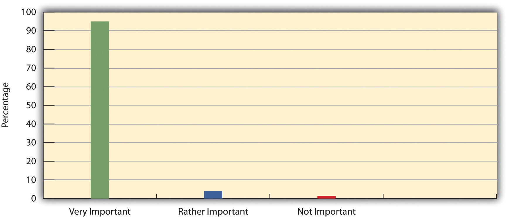

A social groupTwo or more people who regularly interact on the basis of mutual expectations and share a common identity. consists of two or more people who regularly interact on the basis of mutual expectations and who share a common identity. It is easy to see from this definition that we all belong to many types of social groups: our families, our different friendship groups, the sociology class and other courses we attend, our workplaces, the clubs and organizations to which we belong, and so forth. Except in rare cases, it is difficult to imagine any of us living totally alone. Even people who live by themselves still interact with family members, coworkers, and friends and to this extent still have several group memberships.
It is important here to distinguish social groups from two related concepts: social categories and social aggregates. A social categoryA collection of individuals who have at least one attribute in common but otherwise don’t necessarily interact. is a collection of individuals who have at least one attribute in common but otherwise do not necessarily interact. Women is an example of a social category. All women have at least one thing in common, their biological sex, even though they do not interact. Asian Americans is another example of a social category, as all Asian Americans have two things in common, their ethnic background and their residence in the United States, even if they do not interact or share any other similarities. As these examples suggest, gender, race, and ethnicity are the basis for several social categories. Other common social categories are based on our religious preference, geographical residence, and social class.
Falling between a social category and a social group is the social aggregateA collection of people who are in the same place at the same time but who otherwise don’t necessarily interact, except in the most superficial of ways, or have anything else in common., which is a collection of people who are in the same place at the same time but who otherwise do not necessarily interact, except in the most superficial of ways, or have anything else in common. The crowd at a sporting event and the audience at a movie or play are common examples of social aggregates. These collections of people are not a social category, because the people are together physically, and they are also not a group, because they do not really interact and do not have a common identity unrelated to being in the crowd or audience at that moment.
With these distinctions laid out, let’s return to our study of groups by looking at the different types of groups sociologists have delineated.
A common distinction is made between primary groups and secondary groups. A primary groupA group that is usually small, that is characterized by extensive interaction and strong emotional ties, and that lasts over time. is usually small, is characterized by extensive interaction and strong emotional ties, and endures over time. Members of such groups care a lot about each other and identify strongly with the group. Indeed, their membership in a primary group gives them much of their social identity. Charles Horton Cooley, whose looking-glass-self concept was discussed in Chapter 5 "Social Structure and Social Interaction", called these groups primary, because they are the first groups we belong to and because they are so important for social life. The family is the primary group that comes most readily to mind, but small peer friendship groups, whether they are your high school friends, an urban street gang, or middle-aged adults who get together regularly, are also primary groups.
Although a primary group is usually small, somewhat larger groups can also act much like primary groups. Here athletic teams, fraternities, and sororities come to mind. Although these groups are larger than the typical family or small circle of friends, the emotional bonds their members form are often quite intense. In some workplaces, coworkers can get to know each other very well and become a friendship group in which the members discuss personal concerns and interact outside the workplace. To the extent this happens, small groups of coworkers can become primary groups (Elsesser & Peplau, 2006; Marks, 1994).Elsesser, K., & Peplau L. A. (2006). The glass partition: Obstacles to cross-sex friendships at work. Human Relations, 59, 1077–1100; Marks, S. R. (1994). Intimacy in the public realm: The case of co-workers. Social Forces, 72, 843–858.
Our primary groups play significant roles in so much that we do. Survey evidence bears this out for the family. Figure 6.1 "Percentage of Americans Who Say Their Family Is Very Important, Quite Important, Not Too Important, or Not at All Important in Their Lives" shows that an overwhelming majority of Americans say their family is “very important” in their lives. Would you say the same for your family?
Figure 6.1 Percentage of Americans Who Say Their Family Is Very Important, Quite Important, Not Too Important, or Not at All Important in Their Lives
Source: Data from World Values Survey, 2002.
Ideally, our primary groups give us emotional warmth and comfort in good times and bad and provide us an identity and a strong sense of loyalty and belonging. Our primary group memberships are thus important for such things as our happiness and mental health. Much research, for example, shows rates of suicide and emotional problems are lower among people involved with social support networks such as their families and friends than among people who are pretty much alone (Maimon & Kuhl, 2008).Maimon, D., & Kuhl, D. C. (2008). Social control and youth suicidality: Situating Durkheim’s ideas in a multilevel framework. American Sociological Review, 73, 921–943. However, our primary group relationships may also not be ideal, and, if they are negative ones, they may cause us much mental and emotional distress. In this regard, the family as a primary group is the setting for much physical and sexual violence committed against women and children (Gosselin, 2010)Gosselin, D. K. (2010). Heavy hands: An introduction to the crimes of family violence (4th ed.). Upper Saddle River, NJ: Prentice Hall. (see Chapter 11 "Gender and Gender Inequality").
Although primary groups are the most important ones in our lives, we belong to many more secondary groupsA group that is larger and more impersonal than a primary group and that exists to achieve a specific purpose., which are groups that are larger and more impersonal and exist, often for a relatively short time, to achieve a specific purpose. Secondary group members feel less emotionally attached to each other than do primary group members and do not identify as much with their group nor feel as loyal to it. This does not mean secondary groups are unimportant, as society could not exist without them, but they still do not provide the potential emotional benefits for their members that primary groups ideally do. The sociology class for which you are reading this book is an example of a secondary group, as are the clubs and organizations on your campus to which you might belong. Other secondary groups include religious, business, governmental, and civic organizations. In some of these groups, members get to know each other better than in other secondary groups, but their emotional ties and intensity of interaction generally remain much weaker than in primary groups.
Primary and secondary groups can act both as our reference groupsA group that sets a standard for guiding our own behavior and attitudes. or as groups that set a standard for guiding our own behavior and attitudes. The family we belong to obviously affects our actions and views, as, for example, there were probably times during your adolescence when you decided not to do certain things with your friends to avoid disappointing or upsetting your parents. On the other hand, your friends regularly acted during your adolescence as a reference group, and you probably dressed the way they did or did things with them, even against your parents’ wishes, precisely because they were your reference group. Some of our reference groups are groups to which we do not belong but to which we nonetheless want to belong. A small child, for example, may dream of becoming an astronaut and dress like one and play like one. Some high school students may not belong to the “cool” clique in school but may still dress like the members of this clique, either in hopes of being accepted as a member or simply because they admire the dress and style of its members.
Samuel Stouffer and colleagues (Stouffer, Suchman, DeVinney, Star, & Williams, 1949)Stouffer, S. A., Suchman, E. A., DeVinney, L. C., Star, S. A., & Williams, R. M., Jr. (1949). The American soldier: Adjustment during army life (Studies in Social Psychology in World War II, Vol. 1). Princeton, NJ: Princeton University Press. demonstrated the importance of reference groups in a well-known study of American soldiers during World War II. This study sought to determine why some soldiers were more likely than others to have low morale. Surprisingly, Stouffer found that the actual, “objective” nature of their living conditions affected their morale less than whether they felt other soldiers were better or worse off than they were. Even if their own living conditions were fairly good, they were likely to have low morale if they thought other soldiers were doing better. Another factor affecting their morale was whether they thought they had a good chance of being promoted. Soldiers in units with high promotion rates were, paradoxically, more pessimistic about their own chances of promotion than soldiers in units with low promotion rates. Evidently the former soldiers were dismayed by seeing so many other men in their unit getting promoted and felt worse off as a result. In each case, Stouffer concluded, the soldiers’ views were shaped by their perceptions of what was happening in their reference group of other soldiers. They felt deprived relative to the experiences of the members of their reference group and adjusted their views accordingly. The concept of relative deprivation captures this process.
Members of primary and some secondary groups feel loyal to those groups and take pride in belonging to them. We call such groups in-groupsA group to which members feel particularly loyal and take great pride in belonging.. Fraternities, sororities, sports teams, and juvenile gangs are examples of in-groups. Members of an in-group often end up competing with members of another group for various kinds of rewards. This other group is called an out-groupA group with which an in-group feels it is competing for various kinds of rewards and compared to which the in-group feels superior.. The competition between in-groups and out-groups is often friendly, as among members of intramural teams during the academic year when they vie in athletic events. Sometimes, however, in-group members look down their noses at out-group members and even act very hostilely toward them. Rival fraternity members at several campuses have been known to get into fights and trash each other’s houses. More seriously, street gangs attack each other, and hate groups such as skinheads and the Ku Klux Klan have committed violence against people of color, Jews, and other individuals they consider members of out-groups. As these examples make clear, in-group membership can promote very negative attitudes toward the out-groups with which the in-groups feel they are competing. These attitudes are especially likely to develop in times of rising unemployment and other types of economic distress, as in-group members are apt to blame out-group members for their economic problems (Olzak, 1992).Olzak, S. (1992). The dynamics of ethnic competition and conflict. Stanford, CA: Stanford University Press.
These days in the job world we often hear of “networking,” or taking advantage of your connections with people who have connections to other people who can help you land a job. You do not necessarily know these “other people” who ultimately can help you, but you do know the people who know them. Your ties to the other people are weak or nonexistent, but your involvement in this network may nonetheless help you find a job.
Modern life is increasingly characterized by such social networksThe totality of relationships that link us to other people and groups and through them to still other people and groups., or the totality of relationships that link us to other people and groups and through them to still other people and groups. Some of these relationships involve strong bonds, while other relationships involve weak bonds (Granovetter, 1983).Granovetter, M. (1983). The strength of weak ties: A network theory revisited. Sociological Theory, 1, 201–233. Facebook and other Web sites have made possible networks of a size unimaginable just a decade ago. Social networks are important for many things, including getting advice, borrowing small amounts of money, and finding a job. When you need advice or want to borrow $5 or $10, to whom do you turn? The answer is undoubtedly certain members of your social networks—your friends, family, and so forth.
The indirect links you have to people through your social networks can help you find a job or even receive better medical care. For example, if you come down with a serious condition such as cancer, you would probably first talk with your primary care physician, who would refer you to one or more specialists whom you do not know and who have no connections to you through other people you know. That is, they are not part of your social network. Because the specialists do not know you and do not know anyone else who knows you, they are likely to treat you very professionally, which means, for better or worse, impersonally.
Now suppose you have some nearby friends or relatives who are physicians. Because of their connections with other nearby physicians, they can recommend certain specialists to you and perhaps even get you an earlier appointment than your primary physician could. Because these specialists realize you know physicians they know, they may treat you more personally than otherwise. In the long run, you may well get better medical care from your network through the physicians you know. People lucky enough to have such connections may thus be better off medically than people who do not.
But let’s look at this last sentence. What kinds of people have such connections? What kinds of people have friends or relatives who are physicians? All other things being equal, if you had two people standing before you, one employed as a vice president in a large corporation and the other working part time at a fast-food restaurant, which person do you think would be more likely to know a physician or two personally? Your answer is probably the corporate vice president. The point is that factors such as our social class and occupational status, our race and ethnicity, and our gender affect how likely we are to have social networks that can help us get jobs, good medical care, and other advantages. As just one example, a study of three working-class neighborhoods in New York City—one white, one African American, and one Latino—found that white youths were more involved through their parents and peers in job-referral networks than youths in the other two neighborhoods and thus were better able to find jobs, even if they had been arrested for delinquency (Sullivan, 1989).Sullivan, M. (1989). Getting paid: Youth crime and work in the inner city. Ithaca, NY: Cornell University Press. This study suggests that even if we look at people of different races and ethnicities in roughly the same social class, whites have an advantage over people of color in the employment world.
Gender also matters in the employment world. In many businesses, there still exists an “old boys’ network,” in which male executives with job openings hear about male applicants from male colleagues and friends. Male employees already on the job tend to spend more social time with their male bosses than do their female counterparts. These related processes make it more difficult for females than for males to be hired and promoted (Barreto, Ryan, & Schmitt, 2009).Barreto, M., Ryan, M. K., & Schmitt, M. T. (Eds.). (2009). The glass ceiling in the 21st century: Understanding barriers to gender equality. Washington, DC: American Psychological Association. To counter these effects and to help support each other, some women form networks where they meet, talk about mutual problems, and discuss ways of dealing with these problems. An example of such a network is The Links, Inc., a community service group of 12,000 professional African American women whose name underscores the importance of networking (http://www.linksinc.org/index.shtml). Its members participate in 270 chapters in 42 states; Washington, DC; and the Bahamas. Every two years, more than 2,000 Links members convene for a national assembly at which they network, discuss the problems they face as professional women of color, and consider fund-raising strategies for the causes they support.